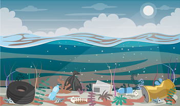

INICIO
SITUACIÓN ACTUAL DEL OCÉANO
El océano impulsa los sistemas mundiales que hacen de la Tierra un lugar habitable para el ser humano. Nuestra lluvia, el agua potable, el tiempo, el clima, los litorales, gran parte de nuestra comida e incluso el oxígeno del aire que respiramos los proporciona y regula el mar.
Una gestión cuidadosa de este recurso mundial esencial es una característica clave de un futuro sostenible. No obstante, en la actualidad, existe un deterioro continuo de las aguas costeras debido a la contaminación y a la acidificación de los océanos que está teniendo un efecto adverso sobre el funcionamiento de los ecosistemas y la biodiversidad. Asimismo, también está teniendo un impacto perjudicial sobre las pesquerías de pequeña escala.
Proteger nuestros océanos debe seguir siendo una prioridad. La biodiversidad marina es vital para la salud de las personas y de nuestro planeta. Las áreas marinas protegidas se deben gestionar de manera efectiva, al igual que sus recursos, y se deben poner en marcha reglamentos que reduzcan la sobrepesca, la contaminación marina y la acidificación de los océanos.
CONTAMINANTES QUE AFECTAN AL OCÉANO
Los contaminantescontaminantes que más afectan al mar son los metales pesados, como el plomo o el mercurio, y compuestos orgánicos sintéticos como plaguicicidas clorados, retardantes a la llama y bifenilos policlorados (PCB), pero también algunos de los elementos fundamentales de la vida como los compuestos del nitrógeno y del fósforo.
Esos contaminantes pueden introducirse en nuestros océanos mediante vertidos directos, ilícitos de desechos industriales o mediante procesos naturales más difíciles de controlar, por ejemplo, viento, lluvia y ríos contaminados.
OBJETIVOS PARA SALVAR EL OCÉANO
El objetivo es conservar y utilizar en forma sostenible los océanos, los mares y los recursos marinos para el desarrollo sostenible, para ello se deberan seguir 3 pautas:
- Aumentar los conocimientos científicos, desarrollar la capacidad de investigación y transferir la tecnología marina, teniendo en cuenta los criterios y directrices para la transferencia de tecnología marina de la Comisión Oceanográfica Intergubernamental, a fin de mejorar la salud de los océanos y potenciar la contribución de la biodiversidad marina al desarrollo de los países en desarrollo, en particular los pequeños Estados insulares en desarrollo y los países menos adelantados.
- Facilitar el acceso de los pescadores artesanales en pequeña escala a los recursos marinos y los mercados.
- Mejorar la conservación y el uso sostenible de los océanos y sus recursos aplicando el derecho internacional reflejado en la Convención de las Naciones Unidas sobre el Derecho del Mar, que proporciona el marco jurídico para la conservación y la utilización sostenible de los océanos y sus recursos, como se recuerda en el párrafo 158 del documento “El futuro que queremos”